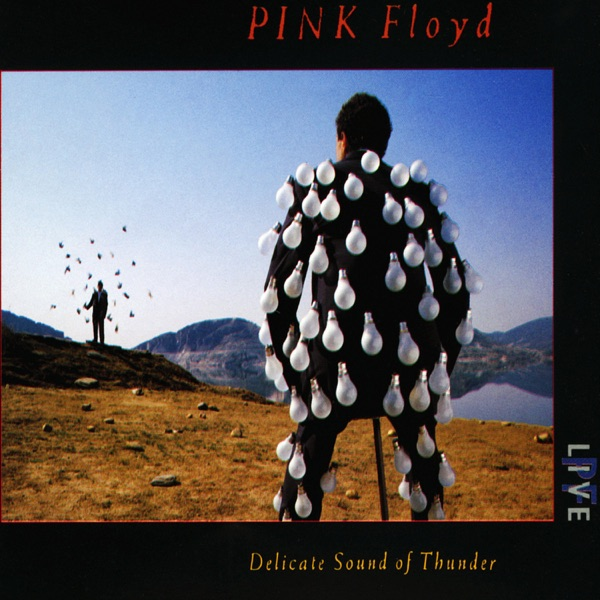

Pulse
Pink Floyd
- Original release
- 1995
- Pressing year
- 2022
- Country
- US
- Format
- Blu-ray Reissue, Stereo, Multichannel (Restored & Re-Edited) / Blu-ray Compilation, Stereo / Box Set Deluxe Edition (Regions A,B,C)
- Label / Cat#
- Pink Floyd Records – PFR39
- Genres
- Rock
- Styles
- Psychedelic Rock, Prog Rock
- Discogs release
- 22215124
- Discogs master
- 296063
- Apple Music
- Delicate Sound of Thunder (Live)
- Wikipedia
- Pulse
Production notes
Tracklist (Discogs)
| Pulse One | ||
| BD1-1 | Shine On You Crazy Diamond, Parts 1-5, 7 | |
| BD1-2 | Learning To Fly | |
| BD1-3 | High Hopes | |
| BD1-4 | Take It Back | |
| BD1-5 | Coming Back To Life | |
| BD1-6 | Sorrow | |
| BD1-7 | Keep Talking | |
| BD1-8 | Another Brick In The Wall, Part 2 | |
| BD1-9 | One Of These Days | |
| The Dark Side Of The Moon | ||
| BD1-10 | Speak To Me | |
| BD1-11 | Breathe (In The Air) | |
| BD1-12 | On The Run | |
| BD1-13 | Time | |
| BD1-14 | The Great Gig In The Sky | |
| BD1-15 | Money | |
| BD1-16 | Us And Them | |
| BD1-17 | Any Colour You Like | |
| BD1-18 | Brain Damage | |
| BD1-19 | Eclipse | |
| Encores | ||
| BD1-20 | Wish You Were Here | |
| BD1-21 | Comfortably Numb | |
| BD1-22 | Run Like Hell | |
| Music Videos (48/24) | ||
| BD2-1 | Take It Back - 1994 | |
| BD2-2 | High Hopes - 1994 | |
| BD2-3 | Marooned - 1994 | |
| Pulse Tour Rehearsal 1994 (96/24) | ||
| BD2-4 | A Great Day For Freedom - Version 1 | |
| BD2-5 | A Great Day For Freedom - Version 2 | |
| BD2-6 | Lost For Words | |
| Concert Screen Films 1994 (96/24) | ||
| BD2-7 | Shine On You Crazy Diamond - Parts 1-4, 7 | |
| BD2-8 | Speak To Me | |
| BD2-9 | Time | |
| BD2-10 | The Great Gig In The Sky | |
| BD2-11 | Money | |
| BD2-12 | Us And Them (Black & White) | |
| BD2-13 | Us And Them (Colour) | |
| BD2-14 | Brain Damage + Eclipse - North American Dates | |
| BD2-15 | Brain Damage + Eclipse - European Dates | |
| BD2-16 | Eclipse | |
| Documentaries & Additional Material (48/24) | ||
| BD2-17 | The Division Bell | |
| BD2-18 | Album Cover Photography (Ely, Cambridgeshire, UK) 1994 | |
| BD2-19 | Pulse TV AD - 1995 | |
| BD2-20 | The Division Bell Airship - 1994 | |
| BD2-21 | Behind The Scene - Interviews with the Lead Technicians for the Division Bell Tour | |
| Rock & Roll Hall Of Fame Induction - 1996 (48/24) | ||
| BD2-22 | Wish You Were Here | |
| Audio-Only Live Recordings (96/24) | ||
| BD2-23 | One Of These Days - Live In Hanover 1994 | |
| BD2-24 | Astronomy Domine - Live In Miami 1994 |
Tracklist (Apple Music)
| 1 | Shine On You Crazy Diamond (Live) | 11:54 |
| 2 | Learning to Fly (Live) | 5:27 |
| 3 | Yet Another Movie (Live) | 6:21 |
| 4 | Round and Around (Live) | 0:33 |
| 5 | Sorrow (Live) | 9:28 |
| 6 | The Dogs of War (Live) | 7:19 |
| 7 | On the Turning Away (Live) | 7:57 |
| 1 | One of These Days (Live) | 6:16 |
| 2 | Time (Live) | 5:16 |
| 3 | Wish You Were Here (Live) | 4:49 |
| 4 | Us and Them (Live) | 7:22 |
| 5 | Money (Live) | 9:52 |
| 6 | Another Brick In the Wall, Pt. 2 (Live) | 5:29 |
| 7 | Comfortably Numb (Live) | 8:56 |
| 8 | Run Like Hell (Live) | 7:12 |
Personnel & credits
- Aubrey Powell — Art Direction [2021], Photography By [Cover photography]
- Caroline Wright (2) — Author [Video and Screen Films]
- Ian Emes — Author [Video and Screen Films]
- Peter Medak — Author [Video and Screen Films]
- Claudia Fontaine — Backing Vocals
- Durga McBroom — Backing Vocals
- Sam Brown — Backing Vocals
- Guy Pratt — Bass Guitar, Vocals
- Storm Thorgerson — Design [Original 2006 cover design], Author [Video and Screen Films]
- Peter Curzon — Design, Art Direction [2021]
- Nick Mason — Drums
- Steve O'Rourke (2) — Executive-Producer
- David Mallet (2) — Film Director
- Dave Gardener — Film Editor
- Lana Topham — Film Producer
- Tim Renwick — Guitar, Vocals
- David Gilmour — Guitar, Vocals, Producer [Music production]
- Jon Carin — Keyboards, Vocals
- Richard Wright — Keyboards, Vocals
- Marc Brickman — Lighting Director, Author [Video and Screen Films]
- Shuki Sen — Management
- Joel Plante — Mixed By [Assisted By]
- Gary Wallis — Percussion
- Rupert Truman — Photography By [Cover photography]
- James Guthrie — Producer [Music Production], Mixed By [Stereo and 5.1 surround mix], Recorded By
- Sean O'Dwyer — Recorded By [Assistant]
- Alain Aboulker — Recorded By [Recording Équipe]
- Bernard Vainer — Recorded By [Recording Équipe]
- Manu Dajee — Recorded By [Recording Équipe]
- René Weis — Recorded By [Recording Équipe]
- Roger Robindoré — Recorded By [Recording Équipe]
- Dick Parry — Saxophone [Saxaphones]
Identifiers
- Barcode: 1 9439-89951-9 9 (Text)
- Barcode: 194398995199 (String)
Notes
Filmed live on 20 October 1994 at Earls Court, London, UK
Includes the first filmed performance of The Dark Side Of The Moon.
Restored & Re-edited from the original tape master in 2019 in Stereo PCM (48/24), 5.1 dts-HD MASTER AUDIO (96/24)
Digipak in rigid card slipcase with 60-page booklet, features pulsing light on the spine as per original 1995 CD with replaceable battery.
Features:
Concert footage restored & re-edited.
Music Videos
Pulse Tour Rehearsal
Concert Screen Films
Documentaries & Additional Materials
Video:
Wish You Were Here - Pink Floyd induction Ceremony 1996 with Billy Corgan, courtesy of THE ROCK AND ROLL HALL OF FAME FOUNDATON, INC.
℗ 2019 Pink Floyd (1987) Limited. Marketed and distributed by Sony Music Entertainment.
© 2021 Pink Floyd (1987) Limited. The copyright in this audio-visual recording and artwork is owned by Pink Floyd (1987) Ltd.
Manufactured by Pozzoli S.p.A., Italy for Pink Floyd (1987) Ltd.
Notes & discrepancies
- Track count differs: Discogs=46, Apple Music=15
- Release year differs: your pressing=2022, Apple Music edition=1988. Apple Music typically streams the most recent remaster.
Pulse is a live concert film and audio recording by Pink Floyd, captured during their 1994 Division Bell Tour at the Earls Court Exhibition Centre in London over five nights in October 1994. Directed by Peter Hall, it was initially released in 1995 on VHS and LaserDisc, documenting a peak moment in the band’s late-career touring — a full, nearly three-hour performance featuring material spanning their entire catalog from Dark Side of the Moon through The Division Bell, plus extended instrumental passages showcasing the band’s live command of their studio-crafted soundscapes.
Pulse holds particular significance in Pink Floyd’s discography as the last major live document with original member Roger Waters absent but the surviving core — David Gilmour, Nick Mason, and keyboardist Phil Manzanera — in full command of the material. The performance demonstrates the band’s ability to execute their more ambitious studio arrangements in a live setting, with particular focus on the visceral guitar work and spatial orchestration that defined their 1970s–1990s output.
The 2022 reissue was released by Rhino Entertainment / Warner Bros. as a Blu-ray edition, remastering the original concert film to 4K resolution and delivering the audio in multiple formats — stereo, 5.1 surround, and Dolby Atmos — sourced from the original multitrack recordings. This represents a significant upgrade in video and audio quality over the original 1995 release, extending the lifespan of this document for contemporary playback systems. Blu-ray as a format allows for the high-bitrate audio and video quality necessary to preserve the spatial and dynamic ambitions of the concert recording.
About this 2022 US pressing (Blu-ray, 4K): Rhino Entertainment / Warner Bros. catalog 194398995199, 2022 reissue of the 1995 live concert film. Blu-ray format with 4K video remaster and multi-format audio (stereo, 5.1 surround, Dolby Atmos). Concert recorded at Earls Court, London, October 1994. Directed by Peter Hall.
Gemini Notes
Recorded during Pink Floyd’s monumental 1994 Division Bell tour, Pulse is arguably the definitive modern document of the band’s live power. The tour was famous for its massive stage production, including the iconic circular screen and lasers. Historically, the setlist is legendary for featuring the first complete live performance of The Dark Side of the Moon since 1975. The Blu-ray edition presents the restored footage alongside a meticulously crafted 5.1 surround sound mix.